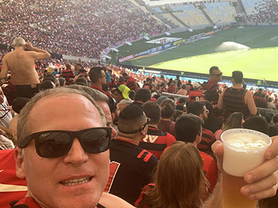
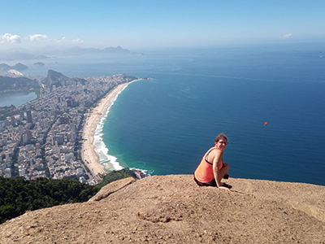
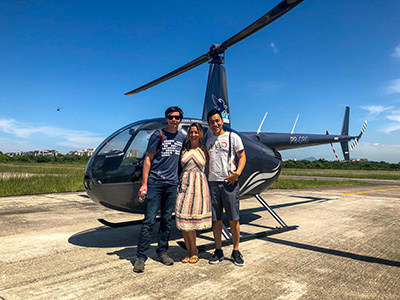
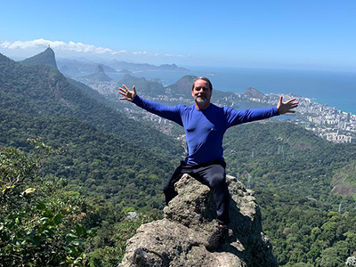

On this tour we cover 5 must see attractions of Rio.
That can be done in one day, like longer than usual, or split in two different days. I suit the tour according to your pace.

Football Match at Maracanã Stadium
This is without a doubt the most thrilling and passionate experience one can have on Rio. The "heat" inside the stadium, with the crowd of fans, singing, chanting and yelling at the referee, is undiscribable. Fans greet you when there is a goal and people that you never saw, seem to be old friends . We mingle with the fans, at the most joyful area but not among the crazy ones. There are different types of seats, including the special boxes.

Dois Irmãos / Two brothers Hill tour and hike
On this tour we drive through the famous and safe Favela called Vidigal, on a motorcycle, as a passanger, up the curvy and narrow streets, with the so called Motoboys . That will give you a taste of how the community looks and take us to the beginning of the trail . We can also take a stop at the famous "Bar da Laje" to take some pictures and enjoy the gorgeous view.
The walk up to the top of the hill is around 50 minutes and the view is breathtaking . On the way down to the main street, we can either walk down or ride with the Motoboys again.

Helicopter Tour
Do you want to have a previleged and exclusive view of Rio ? Come and let me take you to the best price and benefit helicopter companies . Safe and a very unique experience .

Forest, Hikes and Cascades Tour
On this unique, open air tour, you can enjoy inumerous attractions in one the biggest urban forests in the world . In the national park, in the middle of the city of Rio, you can enjoy, easy, moderate or longer hikes in the over 100 miles of trails . At Tijuca Forest we can breath fresh air, away from the crowds, bathing at some cascades, going in some caves, watching some wild life, like capuchin monkeys, sloths and several birds like the toucan . You can take wonderful pictures with gorgeous views of the city
There are several options and I suit the tour according to your needs and pace. Half a day or full day tours.